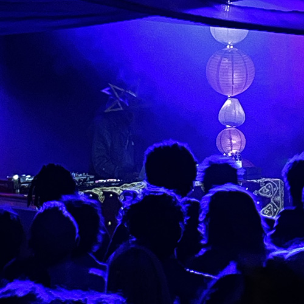

turkis
Et musikalsk mødested hvor horisonten udvides
og traditionerne finder nyt liv.
Hos turkis finder du musik helt fra Grønland til Cuba - også kaldet Roots&Hybrid-musik.
Turkis tager afsæt i Det Turkise Telt som har eksisteret i 12 år.
Kom indenfor og nyd tonerne med en øl eller friskbrygget turkisk kaffe!
